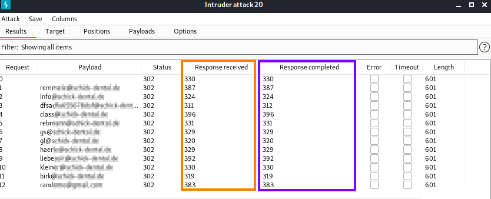

Side-Channel Attacks
A side-channel attack uses physical information, such as EMI, heat, and sound, to break a system. These are especially applicable to crypto attacks.
For example, monitoring CPU utilization (or simply measuring CPU heat) can indicate CPU load during encryption
◇ This can be used to break the encryption
Practical Side-Channel Attacks
Sometime a Web Application hash the password only if the username is valid, because why hash the password for a bad username? This is the opportunity for an attacker that can discover good usernames
◇ Bad username → Immediately return error
◇ Good username → Hash the password. This create a small (but noticeable and measurable) delay returning an error for a good username/bad password
Modern interception proxies such as ZAP and Burp make this timing difference quite easy to measure
Solution: Hash the password in both use cases, for both good usernames and bad. Although simple to accomplish, that design is not common (currently)
Difference correct VS invalid username
• ZAP:

We can note a higher RTT only for correct username. This because the password is hashed only for them.
The Timing-Attack is worked because the web developer used bcrypt to hash passwords for good usernames only.
Here is a PHP source code of a WebApp that can results in a timing attack:
if($usergood == 1){
$options = [
'cost' => 12,
];
$hash=password_hash("$pass", PASSWORD_BCRYPT, $options)."\n";
}
$options = [
'cost' => 12,
];
$hash=password_hash("$pass", PASSWORD_BCRYPT, $options)."\n";
}
• Burpsuite Intruder(Sniper):
Note: in the example below we not have have clear results, probably because the attack is been done externally ("from the internet") and not inside the same network.
Because of that there are delays that we cannot control and the result are more random
1. Positions tab: select the value of the username that we want to change and click to add
3. Payloads tab: Payload Options → select the usernames that you want to tests

◇ Response received → The time taken to begin receiving a response (in milliseconds). This is the one to which we are interested in this scenario
▪ useful when we use a time-based attacks that cause a delay before a response starts (if the whole server-side logic is executed first)
◇ Response completed → The time taken for the response to complete (in milliseconds)
▪ useful when we use a time-based attacks that cause a delay while the response is already being streamed (e.g. if the headers are sent first, and then some further server-side processing happens on your input).